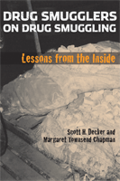

Convicted drug smugglers describe the business from the inside
Convicted drug smugglers describe the business from the inside


 Convicted drug smugglers describe the business from the inside
Convicted drug smugglers describe the business from the inside

|  |
Drug Smugglers on Drug SmugglingLessons from the InsideScott H. Decker and Margaret Townsend Chapmanpaper EAN: 978-1-59213-643-8 (ISBN: 1592136435) |
Outstanding Academic Title, Choice, 2008
"This book is the most comprehensive study of drug smuggling and drug smugglers I have seen. The details and descriptions of the smugglers� activities are rich and extensive. Decker and Chapman delve deeply into interdiction efforts and the methods and strategies used by drug smugglers to counter the government�s efforts. In particular, the study views the government�s efforts at deterrence from the perspective of the smugglers themselves, offering a unique approach to the issue."
—Paul Cromwell, Wichita State University
Drug Smugglers on Drug Smuggling features interviews with 34 convicted drug smugglers-most of them once major operators-detailing exactly how drugs are smuggled into the U.S. from Latin America. These sources provide tangible evidence of the risks, rewards, and organization of international drug smuggling.
Quoting frequently from their interviews, Decker and Chapman explain how individuals are recruited into smuggling, why they stay in it, and how their roles change over time. They describe the specific strategies their interviewees employed to bring drugs into the country and how they previously escaped apprehension. Overall, the authors find that drug smuggling is organized in a series of networks which are usually unconnected.
This extraordinarily informative book will be of particular interest to law enforcement officials and policymakers, but it will appeal to anyone who wants to know how the drug business actually works.
Excerpt available at www.temple.edu/tempress
"Scott Decker and Margaret Townsend Chapman have made a major contribution to our understanding of the underworld of international drug smuggling. Drug Smugglers on Drug Smuggling is a master work that must be read by anyone with a serious interest in the control and containment of illicit drugs."
— Richard Wright, Curators� Professor of Criminology and Criminal Justice, University of Missouri-St. Louis
"For thirty years the U.S. government has targeted cocaine smugglers. For thirty years, as a GAO Report title once put it, �Large Quantities of Cocaine Are Not Being Seized.� This book gives the most thorough picture of why so many people continue to be willing to take the risks of long prison sentences to bring in the drug."
—Peter Reuter, Professor of Public Policy and Criminology and Director of the Program on the Economics of Crime and Justice Policy, University of Maryland.
"Drug Smugglers on Drug Smuggling is a unique and remarkable contribution that challenges many of the core assumptions that animate America�s War on Drugs. In the rich criminological tradition of first hand accounts of crime and its social organization, Decker and Chapman let drug smugglers speak in their own voices about their motivations and strategies as well as their organizational architecture. Their lessons stand in sharp contrast to the rhetoric of our nation�s drug policies and the logic of vast investments in interdiction that seem disconnected from the reality of high volume drug supply. Drug Smugglers offers enduring lessons about the social organization of high income crimes and the centrality of spontaneous crime networks as a form of self-help and collective action."
— Jeffrey Fagan, Professor of Law and Public Health, Columbia University
"[T]his book is informative, well written and interesting.... The detail is rich and informative.... A very interesting read on a topic about which conclusive information is difficult to find. Summing Up: Highly recommended."
— Choice
"[A]n informative account about cocaine and marijuana smugglers incarcerated in U.S. penitentiaries.... The book provides a fascinating overview of dynamics associated with cocaine and marijuana smuggling and of the challenges facing smugglers. The authors gained valuable information with respect to the sociology of the drug smugglers' worlds, and also about the perceptions of risk. They also gained insight with respect to current U.S. drug strategy, which suggests that current strategies appear out of sync with realities. The book makes a significant contribution to the field of criminology as well as social work as the profession strives to enhance its knowledge of the ecology of drug abuse and to develop its expertise in the area of substance abuse. Social works as a profession might be well served to draw on the methodological lessons and the knowledge of scholars such as Decker and Chapman."
— Sociology and Social Welfare
"[A] significant addition to the growing interview-based research literature on organized crime.... The findings of the study...create a quite vivid and detailed picture of drug smuggling into the United States.... This book gives a straightforward account of drug smuggling through the eyes of incarcerated, mostly high-level drug smugglers.... There is a lot of detailed information to be discovered both for students of the history of drug smuggling between Colombia and the United States, and for students of smuggling, illegal markets and organized crime in general."
— Trends in Organized Crime
"[A] well written and detailed account.... Drug Smugglers on Drug Smuggling is an important contribution to the existing research on international drug markets.... Decker and Chapman have provided us with an important piece of scholarship that is sure to generate the audience and debate it deserves given the importance of the issue. The book should appeal to a broad audience of scholars, law enforcement and public officials."
—Contemporary Sociology
Also available in e-book
Acknowledgments
1. Motivation for the Study
2. Organization of the Study
3. Drug Smuggling Organizations
4. Movement of Drugs
5. Roles, Recruitment into, and Remaining Involved in the Drug Smuggling Trade
6. Balancing Risk and Reward
7. Making Sense of Drug Smuggling: Conclusion and Summary
Appendix 1. Instrumentation Study Design
Appendix 2. Study Design
Notes
References
Index
Scott H. Decker is Professor of Criminology and Criminal Justice at Arizona State University. He is the author of Life in the Gang: Family, Friends and Violence.
Margaret Townsend Chapman is an Associate at Abt Associates Inc.
Law and Criminology
Political Science and Public Policy
Sociology
© 2015 Temple University. All Rights Reserved. This page: http://www.temple.edu/tempress/titles/1914_reg.html.